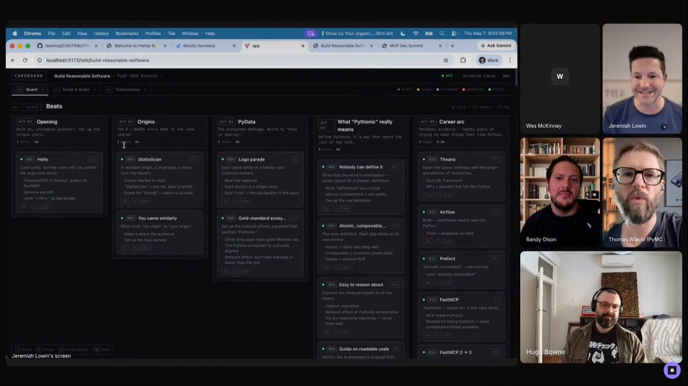
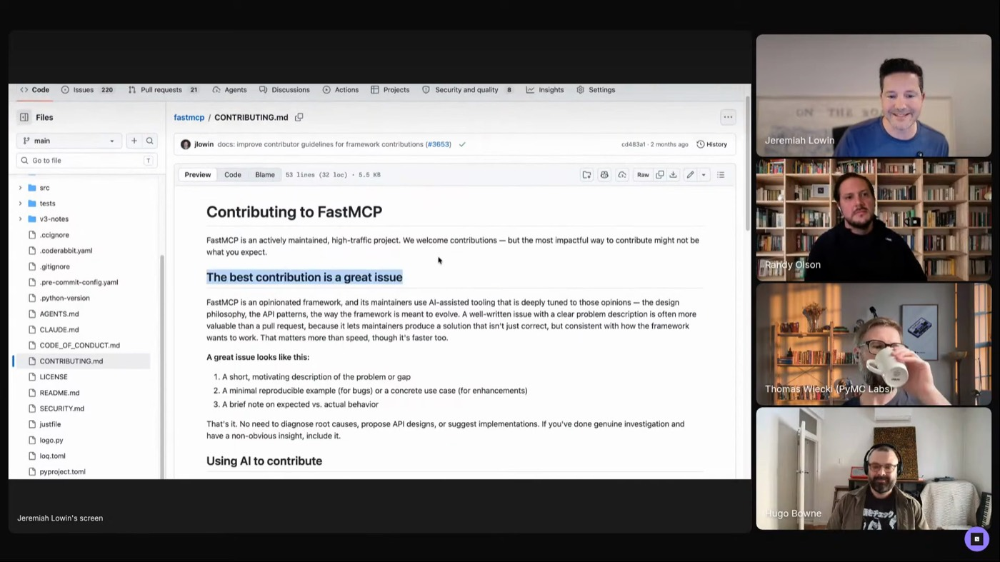
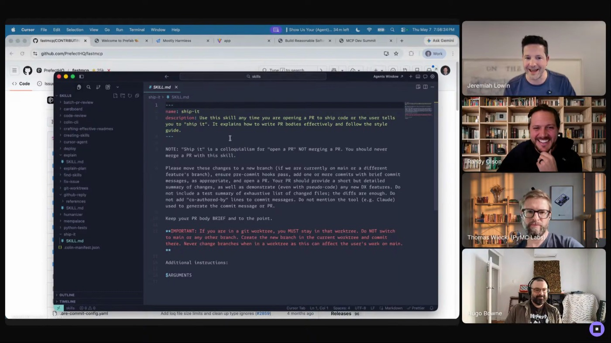

explain
The one he "probably couldn't do without." One sentence does the work: talk to me like a colleague who knows the project but wants to know what you just did. Referenced in every other skill he has.
 JEREMIAH LOWIN
PREFECT · FASTMCP
SECOND BRAIN
MOSTLY HARNESS
JEREMIAH LOWIN
PREFECT · FASTMCP
SECOND BRAIN
MOSTLY HARNESS
Jeremiah is into personal software "in the most true sense." His harness is built for exactly one user: memory he can muck with, a morning voice memo as the day's system prompt, talk software in his own vocabulary, and skills that pin down what "ship it" means.

"I'm into personal software basically in the most true sense." Every layer of Jeremiah's harness is shaped to him: OpenClaw because he can "go muck around with its memory in a way that works for me," skills that encode his tone and his verbs, and tools like Cardboard and Prefab built because nothing off the shelf makes talks or dashboards the way he wants them.
The memory is the core of it: "I use it as a second brain, and so I have big expectations about the information that I put in at a moment coming back out later."
The second-brain write-up captures the loop: daily voice memos feed the memory, ideas land the moment they occur, and months of trickled context sit behind every real question. Cardboard, his custom talk software, rides the same memory: the agent writes through an API and MCP server while the UI stays read-only.
Inside the write-up: four principles, what a session looks like, anti-patterns, a "what you need" list, and the personal-software philosophy underneath it all.

"This has been really fun to have a piece of software that exactly makes talks the way I want them, the way I like to give them."


"The way agents review code, for whatever reason, seems to have a bias that the PR should be accepted."
The one he "probably couldn't do without." One sentence does the work: talk to me like a colleague who knows the project but wants to know what you just did. Referenced in every other skill he has.
Encodes how to treat contributors: "don't say, 'Great work,' followed by a rejection." There's a right way to treat people, and the LLM doesn't do it by default.
"It means open a PR. It does not mean merge the code." A bridge between his words and the outcome he wants, because models read the phrase differently.
"This is how we make living documents." Assembled from things he found online, used to keep every other skill honest as the work exposes failures.
"Skills are awesome ways to steer behavior. They go into the agent's brain in the exact same way that a message from you does."